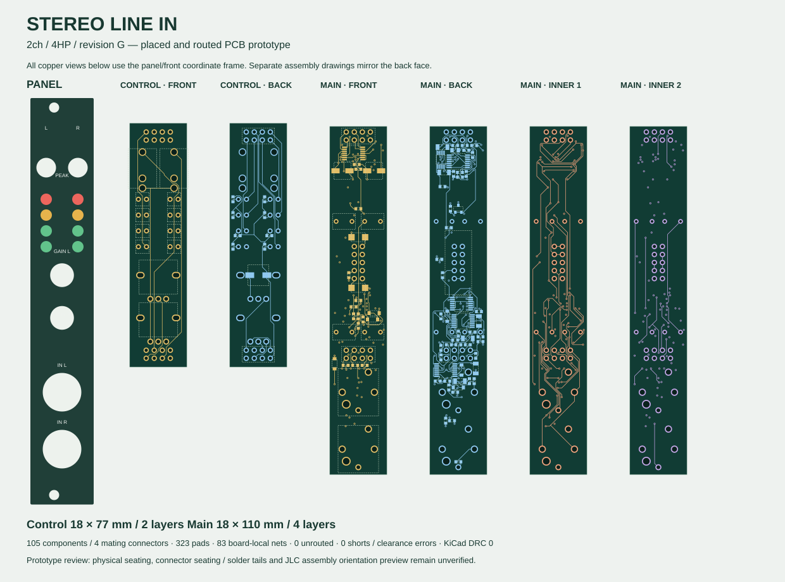

tscircuitで部品・フットプリント・配置を定義し、ローカルで配線。KiCadへの変換後にもDRCを実行。

18×77mm / 2層 / 23部品
KiCad PCB · Gerber ZIP · JLC BOM · JLC CPL · 全実装表
18×110mm / 4層 / 82部品
KiCad PCB · Gerber ZIP · JLC BOM · JLC CPL · 全実装表
試作用の製造データ。JLCの部品向き・実装プレビュー、現物のジャック/ポット座面、ソケットの保持力・実装公差は未確認。発注・在庫予約はしていない。CPLとGerber/ドリルの原点は基板左下、X右・Y上。LED8個は手はんだ。R_LED_SUPPLYは47Ω / C23182へ修正済み。